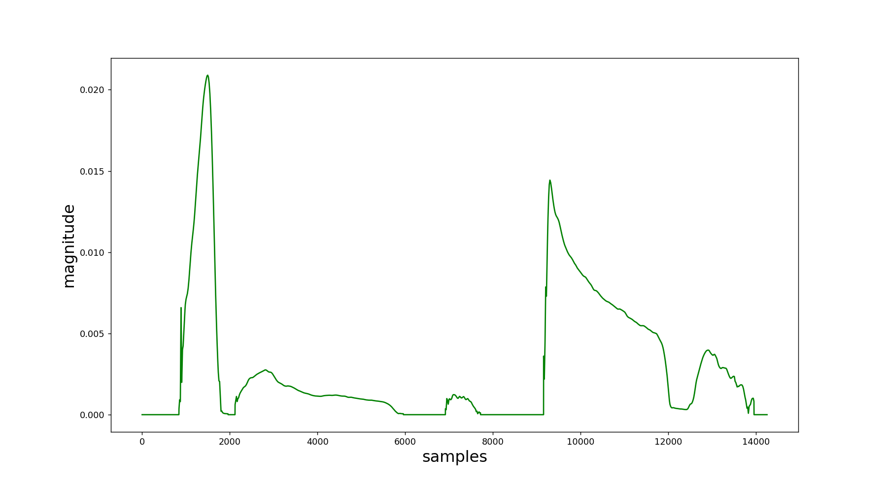
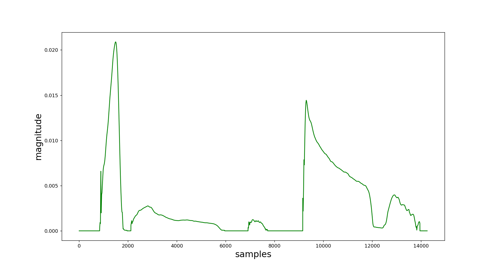

pyQHM¶
The algorithms here implemented were the QHM (Quasi-Harmonic Model), and its upgrades, aQHM (adaptive Quasi-Harmonic Model) and eaQHM (extended adaptive Quasi-Harmonic Model). Their formulation can be found at references [ref2], [ref3] and [ref4].
These algorithms perform the so-called AM-FM decomposition. This designation is used due the fact that, in this method, the signal is modeled as a sum of amplitude- and frequency-modulated components. The goal is to overcome the drawbacks from Fourier-alike techniques, e.g. SFFT, wavelets, etc, which are limited in the time-frequency analysis by the so-called Heisenberg-Gabor inequality.
Quick start¶
The pyQHM module provides a function for each of the QHM family algorithms:
USAGE:
-
amfm_decompy.pyQHM.qhm(signal, pitch, window[, samp_jump=None, N_iter=1, phase_tech='phase'])¶ -
amfm_decompy.pyQHM.aqhm(signal, previous_HM, pitch, window[, samp_jump=None, N_iter=1, N_runs=float('Inf'), phase_tech='phase'])¶ -
amfm_decompy.pyQHM.eaqhm(signal, previous_HM, pitch, window[, samp_jump=None, N_iter=1, N_runs=float('Inf'), phase_tech='phase'])¶ Parameters: - signal (signal object) – contains the signal data and its parameters.
- pitch (pitch object) – contains the pitch track and its parameters.
- window (window object) – contains the sample window and some reference arrays.
- samp_jump (float) – distance in seconds between the center of a extracting frame and the center of its adjacent neighbours (default: sample by sample).
- N_iter (int) – number of iterations for each frame estimation (default: 1).
- phase_tech (str) – has two options: ‘phase’ (default) and ‘freq’. The objective is to choose the smoother base for further aQHM and eaQHM calculations in order to avoid the degradation of their performance due the phase wild behaviour. Normally when a sample jump is employed, the ‘phase’ option it’s enough, since that the interpolation process already smooths the phase signal. However, in a sample by sample analysis, the use of ‘freq’ (cumulative frequency) is favoured.
- previous_HM (modulated signal object) – previously extracted AM-FM signal, used as base for the aQHM and eaQHM calculations.
- N_runs (int) – after the aQHM/eaQHM algorithm has been applied on the whole signal, the function takes the output modulated signal object as new input and restart the aQHM/eaQHM until N_runs are performed OR until the output SRER (Signal-to-Reconstruction Error Ratio) stops growing. The goal is to refine the results. (default: keeps restarting the algorithm infinitely until the maximum SRER).
Return type: modulated signal object
EXAMPLES:
Example 1 - the parameters of a speech signal are extracted sample by sample through QHM. After that, its output is used as input for the first of two aQHM runs with 1 ms sample jump. Finally, the result is used to start one run of the eaQHM with a 1 ms sample jump again. The three algorithms perform 3 iterations per frame extraction.:
import amfm_decompy.pYAAPT as pyaapt
import amfm_decompy.pyQHM as pyqhm
import amfm_decompy.basic_tools as basic
# Declare the variables.
window_duration = 0.015
nharm_max = 25
# Create the signal object.
signal = basic.SignalObj('path_to_sample.wav')
# Create the window object.
window = pyqhm.SampleWindow(window_duration, signal.fs)
# Create the pitch object and calculate its attributes.
pitch = pyaapt.yaapt(signal)
# Use the pitch track to set the number of modulated components.
signal.set_nharm(pitch.values, nharm_max)
# Perform the QHM extraction.
QHM = pyqhm.qhm(signal, pitch, window, N_iter = 3, phase_tech = 'freq')
# Perform the aQHM extraction.
aQHM = pyqhm.aqhm(signal, QHM, pitch, window, 0.001, N_iter = 3, N_runs = 2)
# Perform the eaQHM extraction.
eaQHM = pyqhm.eaqhm(signal, aQHM, pitch, window, 0.001, N_iter=3, N_runs=1)
Classes¶
ModulatedSign Class¶
The ModulatedSign Class stores the extracted modulated signal and all the parameters related to it. The data structure provided by this class is used by all the QHM algorithms, since that the model for a modulated signal is basically the same for all of them.
USAGE:
-
amfm_decompy.pyQHM.ModulatedSign(n_harm, file_size, fs[, phase_tech='phase'])¶ Parameters: - n_harm (int) – number of modulated components that form the signal.
- file_size (int) – length of the speech signal in samples.
- fs (float) – sampling frequency in Hz.
- phase_tech (str) – has two options: ‘phase’ (default) and ‘freq’. The objective is to choose the smoother base for further aQHM and eaQHM calculations in order to avoid the degradation of their performance due the phase wild behaviour. Normally when a sample jump is employed, the ‘phase’ option it’s enough, since that the interpolation process already smooths the phase signal. However, in a sample by sample analysis, the use of ‘freq’ (cumulative frequency) is favoured.
Return type: modulated signal object.
MODULATED SIGNAL ATTRIBUTES:¶
-
ModulatedSign.n_harm¶ Number of modulated components that form the signal. It is set during the object’s initialization.
-
ModulatedSign.size¶ Length of the speech signal in samples. It is set during the object’s initialization.
-
ModulatedSign.fs¶ Sampling frequency in Hz. It is set during the object’s initialization.
-
ModulatedSign.H¶ 3-dimension numpy array (n_harm, 3, file_size), which stores the magnitude, phase and frequency values from all components. Its first dimension refers to the n_harm components, the second to the three composing parameters (where 0 stands for the magnitude, 1 for the phase and 2 for the frequency) and the third dimension to the temporal axis. It is created during the object’s initialization.
-
ModulatedSign.harmonics¶ List where each element is a modulated component. Read more about it in the ComponentObj Class section. It is created during the object’s initialization.
-
ModulatedSign.error¶ Numpy array where each element is the mean squared error between the original signal frame and its synthesized version. It is created during the object’s initialization.
-
ModulatedSign.phase_tech¶ Name of the phase smoothing method used to create a reference for future aQHM/eaQHM calculations. Can be ‘phase’ or ‘freq’. It is set during the object’s initialization.
-
ModulatedSign.signal¶ Final signal synthesized with the extracted parameters. It is created by the ModulatedSign.synthesize method.
-
ModulatedSign.SRER¶ Signal-to-Reconstruction Error Ratio, measures the similarity between the original signal and its synthesized version. The bigger its value, the better the reconstruction. It is calculated by the ModulatedSign.srer method.
-
ModulatedSign.extrap_phase¶ 2-dimension numpy array (n_harm, file_size) which contains a modified version of the extracted phase track from each component. The signals are smoothed (check the ModulatedSign.phase_tech attribute) and their edge values are extrapolated for future aQHM/eaQHM runs. It is calculated by the ModulatedSign.phase_edges method.
MODULATED SIGNAL METHODS:¶
-
ModulatedSign.update_values(a, freq, frame)¶ Parameters: - a (numpy array) – contains the extracted complex coefficients from the harmonic model (for more information about them, please check the references).
- freq (numpy array) – instantaneous frequency from each of the components.
- frame (int) – sample where the center of the moving sample window is located.
Updates the values of magnitude, phase and instantaneous frequency in the H matrix.
-
ModulatedSign.interpolate_samp(samp_frames, pitch)¶ Parameters: - samp_frames (numpy array) – contains the sample locations where the algorithm was employed.
- pitch (pitch object) – pitch information.
Interpolate the parameters values when the extraction is not performed sample-by-sample.
-
ModulatedSign.synthesize([N=None])¶ Parameters: N – select which of the components are going to be synthesized (default: all of them). Runs the ComponentObj.synthesize method for each of the n_harm components, and after that, sum them to construct the final synthesized signal.
-
ModulatedSign.srer(orig_signal, pitch_track)¶ Parameters: - orig_signal (numpy array) – original signal.
- pitch_track (numpy array) – pitch values for each sample.
Calculates the SRER (Signal-to-Reconstruction Error Ratio) for the synthesized signal. It is defined mathematically as
20*log10(std(orig_signal) / std(orig_signal - synth_signal)).
-
ModulatedSign.phase_edges(edges, window)¶ Parameters: - edges – index where occur the pitch transitions between unvoiced-voiced and voiced-unvoiced.
- window (window object) – sample window and its parameters.
Extrapolates the phase at the border of the voiced frames by integrating the edge frequency value. This procedure is necessary for posterior aQHM calculations. Additionally, the method allows the replacement of the extracted phase by the cumulative frequency. The objective is to provide smoother bases for further aQHM and eaQHM calculations. Normally this is not necessary, since that the interpolation process already smooths the phase vector. But in a sample-by-sample extraction case, this substitution is very helpful to avoid the degradation of aQHM and eaQHM performance due the phase wild behaviour.
ComponentObj Class¶
Creates a single component object, whose data is stored in the ModulatedSign.H matrix. The ComponentObj Class provides thus an alternative interface to separately access and manipulate each component.
USAGE:
-
amfm_decompy.pyQHM.ComponentObj(H, harm)¶ Parameters: - H (numpy array) – 3-dimensional array where the component data is stored (for more information, check the ModulatedSign.H attribute).
- harm (int) – the component index.
Return type: component object.
MODULATED COMPONENT ATTRIBUTES:¶
-
ComponentObj.mag¶ Magnitude envelope of the component. It is set during the object’s initialization.
-
ComponentObj.phase¶ Phase angle track of the component in radians. It is set during the object’s initialization.
-
ComponentObj.freq¶ Instantaneous normalized frequency track of the component. To get the value in Hz just multiply this array by the sample frequency. It is set during the object’s initialization.
-
ComponentObj.signal¶ Component signal synthesized with the extracted parameters. It is created by the ComponentObj.synthesize method.
EXAMPLES:
Example 1 - Shows how to to access the component data of a specific component:
import amfm_decompy.pYAAPT as pyaapt
import amfm_decompy.pyQHM as pyqhm
import amfm_decompy.basic_tools as basic
from matplotlib import pyplot as plt
# Declare the variables.
window_duration = 0.015
nharm_max = 25
# Create the signal object.
signal = basic.SignalObj('path_to_sample.wav')
# Create the window object.
window = pyqhm.SampleWindow(window_duration, signal.fs)
# Create the pitch object and calculate its attributes.
pitch = pyaapt.yaapt(signal)
# Use the pitch track to set the number of modulated components.
signal.set_nharm(pitch.values, nharm_max)
# Perform the QHM extraction.
QHM = pyqhm.qhm(signal, pitch, window, 0.001, N_iter = 3)
fig1 = plt.figure()
# Plot the instaneous frequency of the fundamental harmonic.
# The ComponentObj objects are stored inside the harmonics list.
# For more information, please check the ModulatedSign.harmonics attribute.
plt.plot(QHM.harmonics[0].freq*signal.fs)
plt.xlabel('samples', fontsize=18)
plt.ylabel('pitch (Hz)', fontsize=18)
fig2 = plt.figure()
# Plot the envelope magnitude of the third harmonic.
# The ComponentObj objects are stored inside the harmonics list.
# For more information, please check the ModulatedSign.harmonics attribute.
plt.plot(QHM.harmonics[2].mag, color='green')
plt.xlabel('samples', fontsize=18)
plt.ylabel('magnitude', fontsize=18)
The results are presented in the next two pictures:
 

- NOTE:
It must noticed that the ComponentObj can be normally sliced. For example:
QHM.harmonics[0].freq[920:1000]
will return a array containing only the segment of the fundamental frequency between the samples from 920 to 999, while:
QHM.harmonics[2].mag[950]
will return the magnitude of the third harmonic at the 950th sample. However, due the way that the python language is internally built, unfortunately it’s not possible to slice the harmonics list. For example:
QHM.harmonics[0:3].freq[920:1000] QHM.harmonics[0:2].mag[950]
will raise an ERROR message. Therefore, the only way to simultaneously get the data of a group of components is by directly accessing the ModulatedSign.H matrix (or using a foor loop, but this option is slower):
QHM.H[0:3, 2, 920:1000] QHM.H[0:2, 0, 950]
SampleWindow Class¶
Creates the sample hamming window object and some related index arrays.
USAGE:
-
amfm_decompy.pyQHM.SampleWindow(window_duration, fs)¶ Parameters: - window_duration (float) – window duration in seconds.
- fs (float) – sample frequency in Hz.
Return type: sample window object.
SAMPLE WINDOW ATTRIBUTES:¶
-
SampleWindow.dur¶ Window duration in seconds. It is set during the object’s initialization.
-
SampleWindow.length¶ Window length in samples. It is set during the object’s initialization.
-
SampleWindow.data¶ Array containing the hamming window data. It is set during the object’s initialization.
-
SampleWindow.data2¶ Array containing the hamming window data with each element raised to the 2 power. It is set during the object’s initialization.
-
SampleWindow.N¶ Half-window length, i.e., SampleWindow.length/2 -1. It is set during the object’s initialization.
-
SampleWindow.half_len_vec¶ Numpy array that contains the indexes from zero to N, i.e, [0, 1 ... N]. It is set during the object’s initialization.
-
SampleWindow.len_vec¶ Numpy array that contains the indexes from -N to N, i.e, [-N, -N+1 ... N-1, N]. It is set during the object’s initialization.
| [ref2] | Y.Pantazis, “Decomposition of AM-FM signals with applications in speech processing”, PhD Thesis, University of Creta, 2010. |
| [ref3] | Y.Pantazis, O. Rosec and Y. Stylianou, “Adaptive AM-FM signal decomposition with application to speech analysis”, IEEE Transactions on Audio, Speech and Language Processing, vol. 19, n 2, 2011. |
| [ref4] | G.P. Kafentzis, Y. Pantazis, O. Rosec and Y. Stylianou, “An extension of the adaptive quasi-harmonic model”, em IEEE International Conference on Acoustics, Speech and Signal Processing (ICASSP), 2012. |